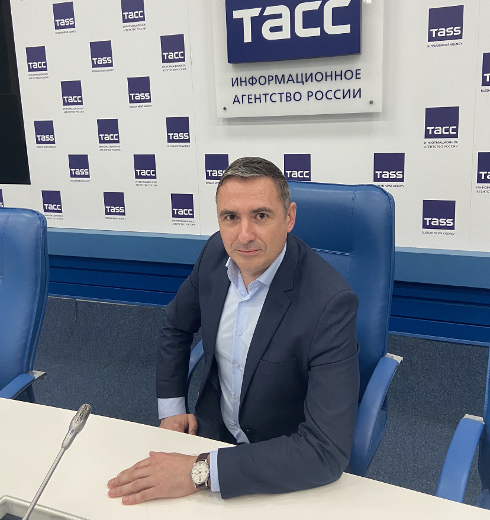

СМИ и признание
-
2023
Собственный корреспондент ТАСС в Сочи и на федеральной территории «Сириус»

Выпустил более 300 информационных сообщений, в том числе 7 новостей на официальном сайте информагентства:
- В Сочи начали строительство первой школы для обучения по новым стандартам
- Всероссийский фестиваль адаптивного хоккея собрал в Сириусе более 60 команд из России
- Более 60 парусников принимают участие в первом фестивале водных видов спорта в Сочи
- В Сочи на фестивале уличной еды и ресторанного бизнеса выступят Гришковец и Собчак
- В Сочи заработал первый пляж с открытым круглогодичным бассейном
- Навка: на первых показах ледового мюзикла «Спящая красавица» в Сочи ожидаются аншлаги
- Более 70 студентов выпустил Российский международный олимпийский университет в 2023 году
-
Январь 2019
ГА.МАК, № 1(22) — «Гость номера»
«Открываем собственный бизнес: как запланировать успех» — авторская колонка на 3 полосы о планировании бизнеса, ценообразовании и роли PR.
«PR — это... публикации, которые приводят к известности, привлекают потенциальных клиентов через более длительный период. Минимальный период ожидания эффекта от PR-кампании — несколько месяцев до года».
-
2021
Журнал «Связи с общественностью в государственных структурах»
Материалы о государственных коммуникациях, работе с аккаунтами чиновников и организации пресс-конференций — легли в основу статей раздела «Статьи» на этом сайте.
-
2021–2023
«К Вашим услугам» (Издательский дом Перегудова)
Выпускающий редактор независимого издания, выходящего в Шахтах с 1990 года.
-
2016–2017
«Город говорит»
Основатель зарегистрированного в Роскомнадзоре печатного СМИ — полный издательский цикл, от идеи до печати.
-
Признание
Почётная грамота администрации города Шахты
За вклад в организацию и проведение региональной выставки-ярмарки «Шахты-ЭКСПО».
-
Кейс
Министерство курортов Краснодарского края
Репосты материалов кейса отеля «Бархатные сезоны» — вместе с региональным радио.
Часть материалов существует пока только в архивном/бумажном виде — живых ссылок на онлайн-версии нет. Список пополняется по мере появления новых публикаций.